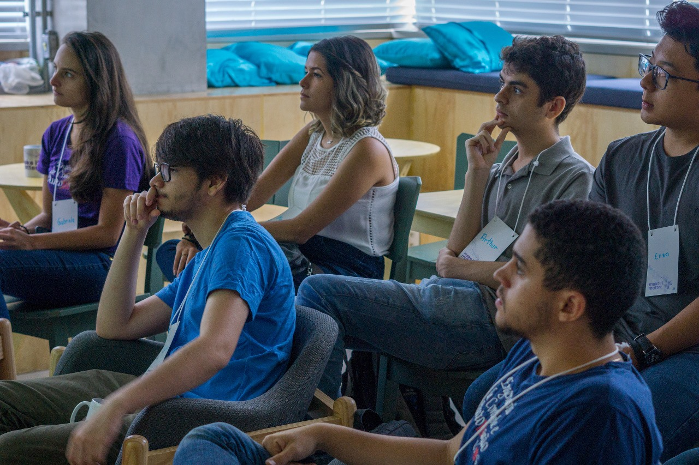

Alveus Tech abre as portas para alunos da UFMG em PEC
A Alveus Tech promoveu uma experiência para os alunos fora da sala de aula, levando-os ao mercado de trabalho
Sair do ambiente universitário e conhecer o mercado de trabalho por dentro: descobrir como os profissionais da sua área trabalham, entender melhor como sua formação acadêmica contribui nos projetos de engenharia na vida real. Essa é, basicamente, a premissa do PEC – Programa de Experiência Técnica Complementar – uma iniciativa promovida pelo colegiado de Engenharia de Controle e automação da UFMG.
Essa semana a Alveus Tech abriu suas portas para oferecer um panorama da nossa experiência para alunos do curso de Sistemas de Informação . O Programa propõe a imersão do aluno no ambiente real, proporcionando atividades técnicas em empresas desenvolvedoras, integradoras ou usuárias de controle e automação durante o período de férias. A experiência conta como um estágio de curta duração e oferece 01 crédito na integralização do curso dos alunos participantes.
Os alunos foram recebidos inicialmente por nosso CEO, Gabriel Haddad, que apresentou a empresa e um panorama geral do campo de atuação da Alveus. Em seguida, tiveram contato também com alguns profissionais da empresa, responsáveis por diferentes projetos. Desenvolvimento Mobile para grandes empresas, Carro Conectado, Desenvolvimento na Nuvem, Estratégia de Detecção de Fraudes e Microlocalização Aplicada à Grande Indústria, foram alguns dos temas presentes na agenda dos estudantes que ainda puderam desfrutar de momentos de descontração nos almoços e lanches com membros da empresa.
A Alveus Tech participa do PEC desde o seu lançamento, em 2009, por acreditar que o programa une o conhecimento científico a aplicações reais, o que é um ganho para os alunos e futuramente, para toda a sociedade. Uma oportunidade que nós consideramos importante para mostrar aos futuros engenheiros a importância do desenvolvimento do conhecimento, além de oferecer uma oportunidade de conhecerem nosso trabalho e estabelecer conexões que possam culminar em uma oportunidade de estágio.